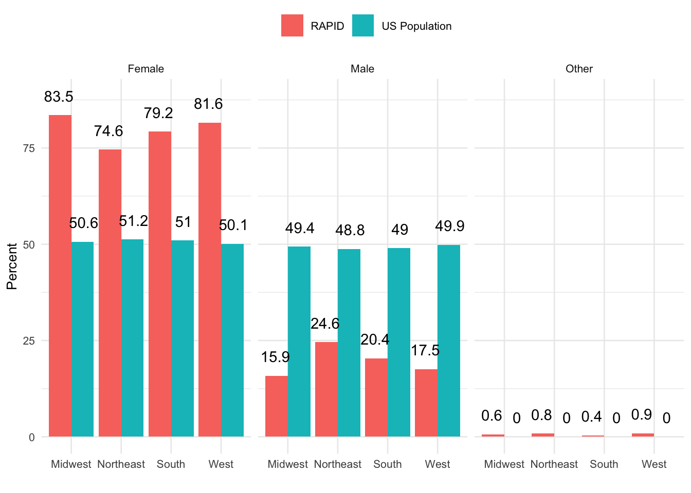
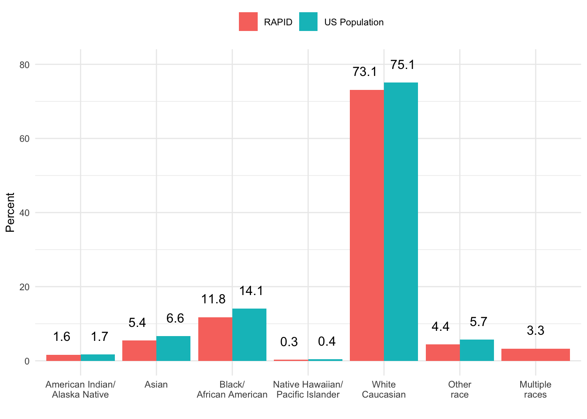
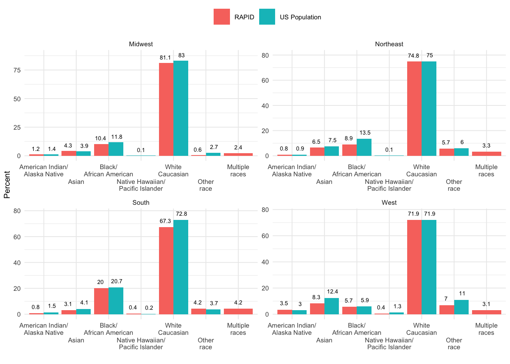
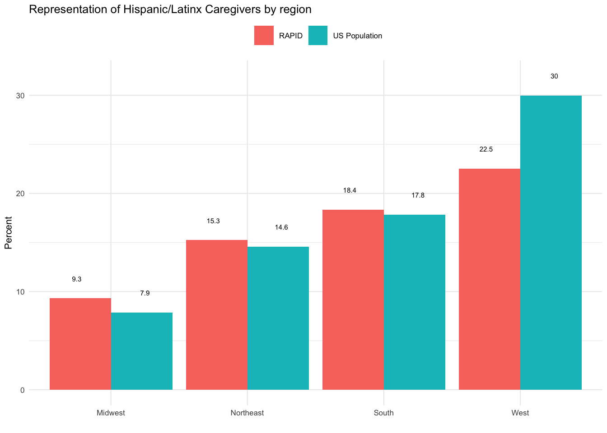

| Group | Sample Size | Accessed telehealth services | Accessed social/emotional health online | Accessed any online/digital services | Increased hours of family childcare | Decreased hours of family childcare | Increased hours of non-family childcare | Decreased hours of non-family childcare |
|---|---|---|---|---|---|---|---|---|
| All participants | ||||||||
| 792 | 41.2 | 40.9 | 79.3 | 26.9 | 33.3 | 4.4 | 48.6 | |
| Parents of children with disabilities | ||||||||
| 108 | 59.3 | 56.5 | 88.9 | 38.0 | 29.6 | 7.4 | 45.4 | |
| Working parents | ||||||||
| 516 | 46.1 | 42.1 | 82.0 | 31.6 | 33.3 | 5.6 | 55.4 | |
| Essential employees | ||||||||
| 263 | 48.5 | 38.4 | 77.9 | 33.8 | 30.0 | 7.6 | 52.5 | |
| Single parents | ||||||||
| 137 | 32.1 | 38.0 | 67.9 | 19.0 | 38.0 | 4.4 | 45.3 | |
| Non-white parents | ||||||||
| 212 | 40.6 | 39.2 | 77.8 | 31.1 | 35.4 | 5.2 | 52.4 | |
| American Indian/ Alaska Native parents | ||||||||
| 13 | 38.5 | 23.1 | 69.2 | 53.8 | 30.8 | 7.7 | 46.2 | |
| Asian parents | ||||||||
| 43 | 44.2 | 37.2 | 79.1 | 25.6 | 34.9 | 7.0 | 41.9 | |
| African American parents | ||||||||
| 93 | 43.0 | 44.1 | 82.8 | 29.0 | 36.6 | 5.4 | 55.9 | |
| Native Hawaiian/ Pacific Islander parents | ||||||||
| 2 | 50.0 | 100.0 | 100.0 | 0.0 | 0.0 | 0.0 | 50.0 | |
| White/ Caucasian parents | ||||||||
| 577 | 41.5 | 41.8 | 79.9 | 25.3 | 32.8 | 4.2 | 47.5 | |
| Other race (not indicated) parents | ||||||||
| 61 | 34.4 | 34.4 | 70.5 | 34.4 | 36.1 | 3.3 | 55.7 | |
| Latinx parents | ||||||||
| 134 | 47.8 | 43.3 | 82.1 | 37.3 | 32.1 | 8.2 | 41.0 | |
| Families below the poverty threshold | ||||||||
| 142 | 39.0 | 36.6 | 71.8 | 22.5 | 36.6 | 4.2 | 37.3 | |
| Low income (< $40K) households | ||||||||
| 203 | 36.6 | 38.9 | 73.4 | 23.2 | 36.5 | 5.9 | 36.5 | |
| Has participated in RAPID more than once | ||||||||
| 406 | 36.9 | 43.1 | 81.0 | 25.1 | 32.5 | 2.5 | 53.9 | |
| Income (in thousands/year) | ||||||||
| (0,35] | 177 | 36.9 | 38.4 | 72.3 | 21.5 | 36.7 | 6.8 | 35.0 |
| (35,60] | 156 | 40.4 | 38.5 | 77.6 | 26.9 | 39.1 | 2.6 | 46.2 |
| (60,100] | 142 | 38.0 | 44.4 | 81.0 | 23.2 | 33.8 | 0.7 | 55.6 |
| (100,4e+04] | 149 | 49.3 | 46.3 | 93.3 | 34.9 | 24.8 | 4.7 | 71.8 |
| Number of children in household | ||||||||
| 1 Child | 351 | 40.7 | 39.3 | 76.4 | 28.5 | 33.3 | 4.0 | 46.4 |
| 2 Children | 246 | 45.9 | 42.7 | 83.3 | 22.0 | 35.4 | 4.5 | 54.9 |
| 3 Children | 102 | 36.6 | 39.2 | 78.4 | 29.4 | 35.3 | 5.9 | 42.2 |
| 4+ Children | 88 | 34.5 | 45.5 | 81.8 | 30.7 | 26.1 | 3.4 | 47.7 |
| Geographic region | ||||||||
| Midwest | 164 | 42.7 | 40.2 | 76.8 | 23.8 | 37.2 | 2.4 | 50.6 |
| Northeast | 123 | 29.8 | 45.5 | 77.2 | 24.4 | 35.8 | 2.4 | 56.1 |
| South | 260 | 42.2 | 36.2 | 78.1 | 28.8 | 28.8 | 5.0 | 47.7 |
| West | 228 | 44.7 | 45.6 | 83.3 | 28.9 | 34.6 | 5.7 | 46.5 |
| Group | Sample Size | Parent education interrupted | Child education interrupted | Lost free lunch for child | Gained free lunch for child |
|---|---|---|---|---|---|
| All participants | |||||
| 792 | 10.5 | 44.1 | 4.8 | 11.0 | |
| Parents of children with disabilities | |||||
| 108 | 26.9 | 58.3 | 8.3 | 15.7 | |
| Working parents | |||||
| 516 | 13.0 | 45.7 | 5.4 | 9.5 | |
| Essential employees | |||||
| 263 | 14.8 | 44.1 | 6.5 | 11.0 | |
| Single parents | |||||
| 137 | 11.7 | 44.5 | 2.9 | 11.7 | |
| Non-white parents | |||||
| 212 | 13.7 | 51.9 | 4.7 | 13.7 | |
| American Indian/ Alaska Native parents | |||||
| 13 | 23.1 | 38.5 | 0.0 | 7.7 | |
| Asian parents | |||||
| 43 | 7.0 | 51.2 | 0.0 | 7.0 | |
| African American parents | |||||
| 93 | 16.1 | 54.8 | 7.5 | 16.1 | |
| Native Hawaiian/ Pacific Islander parents | |||||
| 2 | 0.0 | 50.0 | 50.0 | 0.0 | |
| White/ Caucasian parents | |||||
| 577 | 9.2 | 41.4 | 4.9 | 10.1 | |
| Other race (not indicated) parents | |||||
| 61 | 13.1 | 50.8 | 3.3 | 16.4 | |
| Latinx parents | |||||
| 134 | 18.7 | 45.5 | 8.2 | 16.4 | |
| Families below the poverty threshold | |||||
| 142 | 9.9 | 43.0 | 3.5 | 14.1 | |
| Low income (< $40K) households | |||||
| 203 | 9.4 | 39.9 | 3.0 | 12.3 | |
| Has participated in RAPID more than once | |||||
| 406 | 7.1 | 44.8 | 3.9 | 12.1 | |
| Income (in thousands/year) | |||||
| (0,35] | 177 | 10.7 | 39.0 | 2.8 | 13.0 |
| (35,60] | 156 | 12.8 | 39.7 | 5.8 | 10.9 |
| (60,100] | 142 | 8.5 | 49.3 | 4.9 | 8.5 |
| (100,4e+04] | 149 | 7.4 | 47.0 | 4.7 | 11.4 |
| Number of children in household | |||||
| 1 Child | 351 | 12.3 | 29.3 | 6.0 | 8.8 |
| 2 Children | 246 | 8.5 | 53.7 | 4.9 | 11.8 |
| 3 Children | 102 | 11.8 | 53.9 | 3.9 | 14.7 |
| 4+ Children | 88 | 5.7 | 62.5 | 1.1 | 13.6 |
| Geographic region | |||||
| Midwest | 164 | 11.6 | 45.1 | 4.3 | 11.6 |
| Northeast | 123 | 8.9 | 44.7 | 2.4 | 10.6 |
| South | 260 | 10.0 | 42.3 | 4.6 | 10.8 |
| West | 228 | 10.5 | 45.6 | 5.3 | 11.4 |
| Group | Sample Size | Parent covered by health insurance | Child covered by health insurance | Delayed healthcare for any reason | Suspected of having or diagnosed with COVID-19 | Diagnosed with COVID-19 | Hospitalized | Hospitalized with COVID-19 |
|---|---|---|---|---|---|---|---|---|
| All participants | ||||||||
| 792 | 89.2 | 87.8 | 60.9 | 8.7 | 2.5 | 9.5 | 8.0 | |
| Parents of children with disabilities | ||||||||
| 108 | 80.0 | 77.6 | 75.0 | 28.7 | 13.0 | 27.8 | 16.8 | |
| Working parents | ||||||||
| 516 | 90.8 | 88.7 | 61.2 | 9.9 | 3.3 | 9.1 | 6.8 | |
| Essential employees | ||||||||
| 263 | 90.3 | 87.4 | 64.3 | 12.5 | 4.2 | 12.2 | 8.4 | |
| Single parents | ||||||||
| 137 | 83.2 | 86.9 | 57.7 | 4.4 | 1.5 | 4.4 | 3.7 | |
| Non-white parents | ||||||||
| 212 | 88.2 | 86.8 | 61.8 | 10.8 | 4.7 | 12.3 | 10.4 | |
| American Indian/ Alaska Native parents | ||||||||
| 13 | 84.6 | 92.3 | 53.8 | 38.5 | 15.4 | 30.8 | 15.4 | |
| Asian parents | ||||||||
| 43 | 86.0 | 86.0 | 65.1 | 7.0 | 4.7 | 7.0 | 7.0 | |
| African American parents | ||||||||
| 93 | 89.1 | 87.1 | 65.6 | 11.8 | 6.5 | 19.4 | 17.4 | |
| Native Hawaiian/ Pacific Islander parents | ||||||||
| 2 | 100.0 | 100.0 | 50.0 | 0.0 | 0.0 | 0.0 | 0.0 | |
| White/ Caucasian parents | ||||||||
| 577 | 89.7 | 88.3 | 60.7 | 8.0 | 1.7 | 8.5 | 7.1 | |
| Other race (not indicated) parents | ||||||||
| 61 | 88.5 | 85.2 | 55.7 | 6.6 | 0.0 | 1.6 | 1.6 | |
| Latinx parents | ||||||||
| 134 | 85.7 | 89.6 | 64.9 | 15.7 | 5.2 | 12.7 | 7.5 | |
| Families below the poverty threshold | ||||||||
| 142 | 84.5 | 85.9 | 62.0 | 9.9 | 3.5 | 7.7 | 7.1 | |
| Low income (< $40K) households | ||||||||
| 203 | 86.7 | 87.7 | 62.6 | 8.9 | 3.4 | 6.9 | 6.4 | |
| Has participated in RAPID more than once | ||||||||
| 406 | 94.3 | 93.3 | 59.9 | 5.9 | 0.5 | 8.4 | 8.1 | |
| Income (in thousands/year) | ||||||||
| (0,35] | 177 | 85.9 | 87.6 | 62.7 | 9.6 | 3.4 | 7.9 | 7.4 |
| (35,60] | 156 | 87.7 | 87.2 | 62.2 | 8.3 | 3.2 | 7.1 | 5.8 |
| (60,100] | 142 | 91.5 | 91.5 | 61.3 | 7.7 | 0.7 | 5.6 | 4.2 |
| (100,4e+04] | 149 | 96.6 | 91.9 | 58.4 | 7.4 | 2.0 | 9.4 | 8.8 |
| Number of children in household | ||||||||
| 1 Child | 351 | 89.1 | 88.0 | 60.7 | 8.8 | 3.7 | 8.8 | 7.1 |
| 2 Children | 246 | 91.4 | 86.9 | 62.6 | 9.3 | 0.8 | 11.4 | 9.8 |
| 3 Children | 102 | 88.2 | 88.2 | 55.9 | 4.9 | 2.0 | 7.8 | 6.9 |
| 4+ Children | 88 | 84.1 | 88.6 | 62.5 | 10.2 | 3.4 | 8.0 | 8.1 |
| Geographic region | ||||||||
| Midwest | 164 | 87.2 | 87.2 | 62.8 | 7.3 | 2.4 | 13.4 | 12.3 |
| Northeast | 123 | 91.0 | 88.6 | 63.4 | 9.8 | 1.6 | 12.2 | 8.9 |
| South | 260 | 87.9 | 88.4 | 60.0 | 7.7 | 2.7 | 8.1 | 6.6 |
| West | 228 | 91.2 | 88.6 | 58.8 | 9.2 | 2.6 | 6.1 | 5.3 |
| Group | Sample Size | Experienced increased anxiety | Experienced increased depression | Experienced increased stress | Experienced decreased support | Experienced increased loneliness | Report fussier and more defiant children | Report more fearful children |
|---|---|---|---|---|---|---|---|---|
| All participants | ||||||||
| 792 | 61.2 | 38.1 | 59.5 | 39.7 | 44.2 | 34.2 | 0 | |
| Parents of children with disabilities | ||||||||
| 108 | 82.4 | 38.7 | 49.5 | 41.9 | 46.3 | 24.3 | 0 | |
| Working parents | ||||||||
| 516 | 60.1 | 34.7 | 57.2 | 37.8 | 45.9 | 32.3 | 0 | |
| Essential employees | ||||||||
| 263 | 63.5 | 31.4 | 53.2 | 34.4 | 41.0 | 28.4 | 0 | |
| Single parents | ||||||||
| 137 | 58.4 | 34.8 | 46.0 | 36.6 | 44.9 | 31.1 | 0 | |
| Non-white parents | ||||||||
| 212 | 59.0 | 34.9 | 62.3 | 35.5 | 38.6 | 31.2 | 0 | |
| American Indian/ Alaska Native parents | ||||||||
| 13 | 92.3 | 30.8 | 84.6 | 33.3 | 15.4 | 30.8 | 0 | |
| Asian parents | ||||||||
| 43 | 46.5 | 40.5 | 62.8 | 40.5 | 30.2 | 30.0 | 0 | |
| African American parents | ||||||||
| 93 | 58.1 | 28.6 | 50.5 | 30.3 | 41.3 | 25.3 | 0 | |
| Native Hawaiian/ Pacific Islander parents | ||||||||
| 2 | 0.0 | 50.0 | 100.0 | 50.0 | 100.0 | 100.0 | 0 | |
| White/ Caucasian parents | ||||||||
| 577 | 62.0 | 39.5 | 58.5 | 41.2 | 46.3 | 35.3 | 0 | |
| Other race (not indicated) parents | ||||||||
| 61 | 63.9 | 41.0 | 73.8 | 39.7 | 43.3 | 39.0 | 0 | |
| Latinx parents | ||||||||
| 134 | 63.4 | 40.3 | 62.7 | 38.6 | 37.3 | 38.3 | 0 | |
| Families below the poverty threshold | ||||||||
| 142 | 66.9 | 35.9 | 52.8 | 40.9 | 39.4 | 31.4 | 0 | |
| Low income (< $40K) households | ||||||||
| 203 | 68.0 | 35.6 | 54.2 | 39.4 | 40.9 | 32.8 | 0 | |
| Has participated in RAPID more than once | ||||||||
| 406 | 56.9 | 42.3 | 65.4 | 44.6 | 49.1 | 40.6 | 0 | |
| Income (in thousands/year) | ||||||||
| (0,35] | 177 | 67.8 | 35.2 | 52.5 | 39.3 | 41.8 | 32.6 | 0 |
| (35,60] | 156 | 60.9 | 38.1 | 59.0 | 36.1 | 42.9 | 32.1 | 0 |
| (60,100] | 142 | 54.9 | 39.4 | 63.1 | 42.1 | 43.7 | 33.8 | 0 |
| (100,4e+04] | 149 | 59.1 | 44.6 | 70.5 | 43.1 | 53.7 | 39.6 | 0 |
| Number of children in household | ||||||||
| 1 Child | 351 | 61.0 | 35.8 | 59.7 | 37.9 | 43.7 | 33.4 | 0 |
| 2 Children | 246 | 60.2 | 41.1 | 61.0 | 42.9 | 47.5 | 33.1 | 0 |
| 3 Children | 102 | 59.8 | 41.6 | 57.8 | 40.4 | 44.0 | 39.8 | 0 |
| 4+ Children | 88 | 67.0 | 37.2 | 59.1 | 36.8 | 38.6 | 35.3 | 0 |
| Geographic region | ||||||||
| Midwest | 164 | 59.8 | 38.7 | 61.6 | 45.3 | 44.5 | 30.2 | 0 |
| Northeast | 123 | 65.9 | 40.5 | 62.6 | 33.1 | 41.5 | 35.3 | 0 |
| South | 260 | 58.8 | 35.1 | 55.0 | 38.2 | 40.9 | 31.0 | 0 |
| West | 228 | 61.8 | 41.0 | 62.6 | 41.8 | 50.2 | 40.2 | 0 |
| Group | Sample Size | Have lower employment status | Has sick leave through employer | Fears losing job if takes 2 weeks of sick leave | Received unemployment benefits | Lost household income | Have some financial problems | Have major financial problems | Have difficulty paying for basic necessicites |
|---|---|---|---|---|---|---|---|---|---|
| All participants | |||||||||
| 792 | 40.0 | 47.1 | 21.2 | 8.3 | 48.5 | 73.2 | 23.7 | 22.0 | |
| Parents of children with disabilities | |||||||||
| 108 | 62.1 | 32.7 | 37.9 | 17.8 | 44.9 | 89.8 | 38.0 | 47.2 | |
| Working parents | |||||||||
| 516 | 35.1 | 62.3 | 18.0 | 8.4 | 42.2 | 68.0 | 19.4 | 18.2 | |
| Essential employees | |||||||||
| 263 | 40.6 | 64.4 | 25.1 | 11.5 | 46.4 | 74.5 | 22.1 | 20.9 | |
| Single parents | |||||||||
| 137 | 50.9 | 39.3 | 25.0 | 7.4 | 54.0 | 84.7 | 34.3 | 31.4 | |
| Non-white parents | |||||||||
| 212 | 47.8 | 47.6 | 27.5 | 9.0 | 53.8 | 79.2 | 31.1 | 27.8 | |
| American Indian/ Alaska Native parents | |||||||||
| 13 | 27.3 | 36.4 | 50.0 | 7.7 | 30.8 | 84.6 | 46.2 | 61.5 | |
| Asian parents | |||||||||
| 43 | 26.5 | 55.6 | 13.8 | 7.0 | 46.5 | 69.8 | 27.9 | 18.6 | |
| African American parents | |||||||||
| 93 | 57.6 | 51.8 | 35.4 | 13.0 | 54.8 | 77.4 | 30.1 | 26.9 | |
| Native Hawaiian/ Pacific Islander parents | |||||||||
| 2 | 50.0 | 100.0 | 0.0 | 0.0 | 100.0 | 100.0 | 0.0 | 0.0 | |
| White/ Caucasian parents | |||||||||
| 577 | 37.4 | 46.7 | 18.8 | 8.0 | 46.5 | 71.1 | 20.8 | 19.9 | |
| Other race (not indicated) parents | |||||||||
| 61 | 50.0 | 37.0 | 17.1 | 5.0 | 60.7 | 86.9 | 32.8 | 29.5 | |
| Latinx parents | |||||||||
| 134 | 54.8 | 46.2 | 25.8 | 10.5 | 54.9 | 82.8 | 29.9 | 30.6 | |
| Families below the poverty threshold | |||||||||
| 142 | 56.6 | 22.0 | 24.8 | 12.9 | 56.0 | 89.4 | 39.4 | 32.4 | |
| Low income (< $40K) households | |||||||||
| 203 | 59.6 | 26.6 | 25.0 | 11.9 | 59.9 | 89.2 | 40.4 | 32.0 | |
| Has participated in RAPID more than once | |||||||||
| 406 | 34.2 | 52.1 | 15.8 | 6.7 | 51.5 | 69.0 | 22.4 | 16.7 | |
| Income (in thousands/year) | |||||||||
| (0,35] | 177 | 59.1 | 24.2 | 25.0 | 13.1 | 59.1 | 90.4 | 39.0 | 31.6 |
| (35,60] | 156 | 39.6 | 49.6 | 20.8 | 9.7 | 45.5 | 75.0 | 25.0 | 20.5 |
| (60,100] | 142 | 30.5 | 60.2 | 15.9 | 4.9 | 38.0 | 66.2 | 10.6 | 12.0 |
| (100,4e+04] | 149 | 21.0 | 72.5 | 5.7 | 5.4 | 40.9 | 47.0 | 6.7 | 4.7 |
| Number of children in household | |||||||||
| 1 Child | 351 | 37.3 | 52.4 | 17.9 | 8.3 | 43.6 | 71.2 | 23.1 | 22.5 |
| 2 Children | 246 | 38.7 | 50.4 | 17.4 | 7.0 | 51.2 | 70.3 | 18.7 | 17.5 |
| 3 Children | 102 | 38.2 | 37.9 | 33.8 | 9.9 | 50.0 | 75.5 | 26.5 | 17.6 |
| 4+ Children | 88 | 57.7 | 26.2 | 33.9 | 9.1 | 60.9 | 87.5 | 37.5 | 37.5 |
| Geographic region | |||||||||
| Midwest | 164 | 34.7 | 40.8 | 22.0 | 11.0 | 45.7 | 74.4 | 25.0 | 26.8 |
| Northeast | 123 | 40.0 | 50.0 | 19.0 | 8.3 | 42.3 | 75.6 | 26.0 | 24.4 |
| South | 260 | 45.3 | 46.0 | 22.9 | 5.8 | 55.2 | 75.0 | 26.2 | 23.5 |
| West | 228 | 38.0 | 51.4 | 16.9 | 8.8 | 46.9 | 69.3 | 18.4 | 15.8 |



